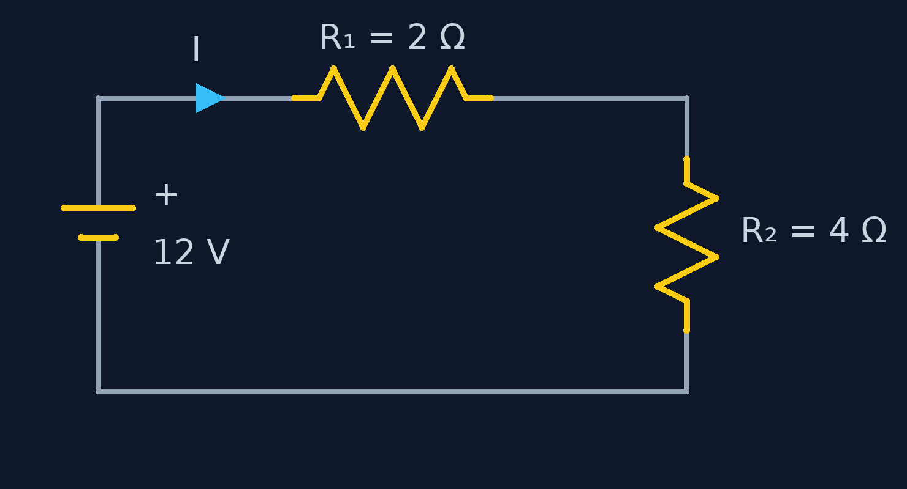

اتصال سری
قطعهها پشتسرهماند و فقط یک مسیر وجود دارد. جریان در همه یکسان است و ولتاژ بینشان تقسیم میشود.
Req = R1 + R2 + R3
🚰 مثل چند لولهی پشتسرهم: همهی آب از هر سه میگذرد.
روی درس مورد نظر بزنید تا مستقیم به همان بخش بروید.
درس ۱
وقتی چند مقاومت داریم، اولین کار ساده کردن مدار است: چند مقاومت را با یک مقاومت معادل (Req) عوض میکنیم، بدون اینکه جریان کل منبع تغییر کند.
قطعهها پشتسرهماند و فقط یک مسیر وجود دارد. جریان در همه یکسان است و ولتاژ بینشان تقسیم میشود.
Req = R1 + R2 + R3
🚰 مثل چند لولهی پشتسرهم: همهی آب از هر سه میگذرد.
هر قطعه مسیر جداگانه دارد. ولتاژ در همه یکسان است و جریان بین شاخهها تقسیم میشود.
1/Req = 1/R1 + 1/R2 + 1/R3
🛣️ مثل چند باند جاده: باند بیشتر، عبور راحتتر؛ پس Req از کوچکترین شاخه هم کمتر است.
| ویژگی | سری | موازی |
|---|---|---|
| جریان | یکسان | تقسیم میشود |
| ولتاژ | تقسیم میشود | یکسان |
| مقاومت معادل | بزرگتر از همه | کوچکتر از همه |
| اگر یک قطعه قطع شود | کل مدار قطع | بقیه کار میکنند |
سه مقاومت ۱۰۰، ۲۰۰ و ۳۰۰ اهمی، سری
Req = 100 + 200 + 300 = 600 Ω
دو مقاومت ۶ و ۳ اهمی، موازی
Req = (6 × 3) / (6 + 3) = 2 Ω
درس ۲
مجموع ولتاژها در هر حلقهی بسته صفر است. یعنی هر چقدر منبع به بارها انرژی میدهد، دقیقاً همانقدر در مقاومتها «افت» میکند.

یک جهت برای چرخیدن در حلقه انتخاب کن (مثلاً ساعتگرد) و جهت جریان را هم همان بگیر.
از منبع شروع کن. ولتاژ منبع (عبور از − به +) مثبت، و افت روی هر مقاومت (R × I) منفی است.
همه را جمع بزن و برابر صفر بگذار، بعد معادله را حل کن.
+12 − 2·I − 4·I = 0 ⟹ I = 12 / 6 = 2 A
V1 = 2 × 2 = 4 V , V2 = 4 × 2 = 8 V
بررسی: 12 − 4 − 8 = 0 ✓
درس ۳
گره نقطهای است که سه سیم یا بیشتر به هم میرسند. بار الکتریکی در گره جمع نمیشود و گم هم نمیشود: مجموع جریانهای ورودی برابر مجموع جریانهای خروجی است.
💧 مثل دوراهی لوله: هر چقدر آب وارد میشود، همانقدر از شاخهها بیرون میرود.
۵ آمپر وارد یک گره میشود و از یک شاخه ۲ آمپر خارج میشود. جریان شاخهی دوم چقدر است؟
5 = 2 + I ⟹ I = 3 A
منبع ۱۲ ولت به دو مقاومت ۴ و ۶ اهمی موازی وصل است.
I1 = 12 / 4 = 3 A , I2 = 12 / 6 = 2 A
Itotal = 3 + 2 = 5 A
بررسی: Req = 24/10 = 2.4 Ω ⟹ 12 / 2.4 = 5 A ✓
درس ۴
وقتی مدار بزرگتر از سری و موازی ساده است، ولتاژ گرهها را مجهول میگیریم و برای هر گره KCL مینویسیم. جریان هر مقاومت را هم از اختلاف ولتاژ دو سرش بهدست میآوریم:
I = (Va − Vb) / R
یک گره را «مرجع» (زمین، ۰ ولت) انتخاب کن.
برای بقیهی گرهها ولتاژ مجهول بنویس. گرهی که مستقیم به منبع ولتاژ وصل به زمین است، ولتاژش معلوم است.
برای هر گرهی مجهول KCL بنویس (مجموع جریانهای خروجی = ۰).
معادلهها را حل کن و در آخر جریانها را حساب و بررسی کن.
منبع ۱۲ ولت به گرهی A وصل است. بین A و B مقاومت ۴ اهمی داریم و از B دو مقاومت ۶ و ۱۲ اهمی به زمین میروند. ولتاژ B چقدر است؟
KCL at B: (VB − 12)/4 + VB/6 + VB/12 = 0
× 12 ⟹ 3(VB − 12) + 2VB + VB = 0 ⟹ VB = 6 V
I4Ω = 1.5 A , I6Ω = 1 A , I12Ω = 0.5 A
بررسی: 1.5 = 1 + 0.5 ✓
درس ۵
مش حلقهای است که داخلش حلقهی دیگری نباشد. اینجا جریان هر مش را مجهول میگیریم و برای هر مش KVL مینویسیم. مقاومتی که بین دو مش مشترک است، جریانش اختلاف دو جریان مش است.
مش اول: منبع ۱۰ ولت و R1 = 2 Ω. مش دوم: R3 = 4 Ω. مقاومت مشترک: R2 = 4 Ω. هر دو جریان را ساعتگرد بگیر.
Mesh 1: 10 = 2·I1 + 4(I1 − I2)
Mesh 2: 0 = 4(I2 − I1) + 4·I2 ⟹ I2 = 0.5·I1
10 = 6I1 − 2I1 ⟹ I1 = 2.5 A , I2 = 1.25 A
بررسی با درس ۱: R2 ∥ R3 = 2 Ω ⟹ Rtotal = 4 Ω ⟹ I = 10/4 = 2.5 A ✓
اگر گرهی مجهول کمتری دارید، گره راحتتر است؛ اگر حلقهی کمتری دارید، مش را انتخاب کنید. هر دو جواب یکسان میدهند.
جابهجا گرفتن علامتها در KVL، موازی حساب کردن مقاومتهای سری، و ترسیدن از جواب منفی: جریان منفی فقط یعنی جهت واقعی برعکسِ جهت فرضی توست.
درس بعدی: مدارهای الکتریکی